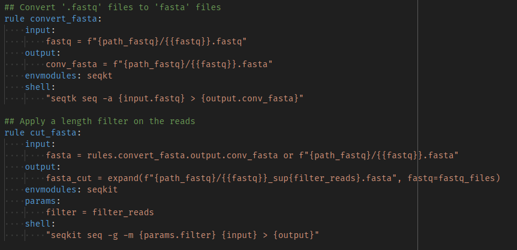

<!DOCTYPE html>
<html lang="fr">
  <head>
    <meta charset="UTF-8" />
    <title>Portfolio - Guillaume</title>
    <script type="importmap">
      {
        "imports": {
          "three": "https://unpkg.com/three@0.152.0/build/three.module.js"
        }
      }
    </script>
    <link rel="stylesheet" href="css/style.css" />
  </head>
  <body>
    <script type="module">
      import * as THREE from "three";

      // Initialisation de la scène
      const scene = new THREE.Scene();
      const camera = new THREE.PerspectiveCamera(
        75,
        window.innerWidth / window.innerHeight,
        0.1,
        2000
      );
      camera.position.z = 500;

      const renderer = new THREE.WebGLRenderer({ antialias: true });
      renderer.setSize(window.innerWidth, window.innerHeight);
      document.body.appendChild(renderer.domElement);

      // Génération des étoiles
      const starCount = 8000;
      const positions = new Float32Array(starCount * 3);

      function generateStars() {
        for (let i = 0; i < starCount * 3; i += 3) {
          positions[i] = (Math.random() - 0.5) * 2000;
          positions[i + 1] = (Math.random() - 0.5) * 2000;
          positions[i + 2] = (Math.random() - 0.5) * 2000;
        }
      }
      generateStars();

      const starGeometry = new THREE.BufferGeometry();
      starGeometry.setAttribute(
        "position",
        new THREE.BufferAttribute(positions, 3)
      );

      const starMaterial = new THREE.PointsMaterial({
        color: 0xffffff,
        size: 2,
        sizeAttenuation: true,
      });

      const stars = new THREE.Points(starGeometry, starMaterial);
      scene.add(stars);

      // Création du point cliquable (étoile spéciale)
      const pointGeometry = new THREE.SphereGeometry(20, 40, 40);
      const pointMaterial = new THREE.MeshBasicMaterial({ color: 0xffd700 });
      const clickablePoint = new THREE.Mesh(pointGeometry, pointMaterial);

      // Position initiale autour du centre
      const orbitRadius = 400;
      let angle = Math.random() * Math.PI * 2;
      clickablePoint.position.set(
        Math.cos(angle) * orbitRadius,
        Math.sin(angle) * orbitRadius,
        -500
      );

      scene.add(clickablePoint);

      // Détection du survol et du clic
      const raycaster = new THREE.Raycaster();
      const mouse = new THREE.Vector2();

      function onMouseMove(event) {
        mouse.x = (event.clientX / window.innerWidth) * 2 - 1;
        mouse.y = -(event.clientY / window.innerHeight) * 2 + 1;

        raycaster.setFromCamera(mouse, camera);
        const intersects = raycaster.intersectObject(clickablePoint);

        if (intersects.length > 0) {
          document.body.style.cursor = "pointer";
          clickablePoint.material.color.set(0xff4500);
        } else {
          document.body.style.cursor = "default";
          clickablePoint.material.color.set(0xffd700);
        }
      }

      let terminalExists = false;

      function onClick(event) {
        raycaster.setFromCamera(mouse, camera);
        const intersects = raycaster.intersectObject(clickablePoint);

        if (intersects.length > 0 && !terminalExists) {
          terminalExists = true;
          showTerminal();
        }
      }

      window.addEventListener("mousemove", onMouseMove);
      window.addEventListener("click", onClick);

      function animate() {
        requestAnimationFrame(animate);
        stars.rotation.y += 0.0005;
        stars.rotation.x += 0.0003;

        angle += 0.0008;
        clickablePoint.position.x = Math.cos(angle) * orbitRadius;
        clickablePoint.position.y = Math.sin(angle) * orbitRadius;

        renderer.render(scene, camera);
      }
      animate();

      window.addEventListener("resize", () => {
        renderer.setSize(window.innerWidth, window.innerHeight);
        camera.aspect = window.innerWidth / window.innerHeight;
        camera.updateProjectionMatrix();
      });

      function showTerminal() {
        let terminal = document.createElement("div");
        terminal.classList.add("terminal");

        let terminalContent = document.createElement("div");
        terminalContent.classList.add("terminal-content");

        let terminalText = document.createElement("p");
        terminalContent.appendChild(terminalText);

        let cursor = document.createElement("span");
        cursor.classList.add("cursor");
        terminalText.appendChild(cursor);

        terminal.appendChild(terminalContent);
        document.body.appendChild(terminal);

        setTimeout(() => {
          terminal.style.visibility = "visible";
          terminal.style.opacity = "1";
          terminal.style.transform = "translate(-50%, -50%) scale(1)";
        }, 200);

        let text = `DÉMARRAGE DU SYSTÈME... ✅
CHARGEMENT DES FICHIERS... ✅
CONNEXION AU SERVEUR PRINCIPAL... ✅

IDENTIFICATION DE L'UTILISATEUR
> Nom : Guillaume
> Rôle : Développeur Web
> Spécialité : Sites performants et modernes ⚡

ANALYSE DES DONNÉES EN COURS...

HISTORIQUE RETROUVÉ :
Guillaume a d'abord exploré les profondeurs de la biologie marine 🌊, cherchant à comprendre les écosystèmes aquatiques.  
C'est en découvrant la bioinformatique qu'il s'est confronté à la programmation, analysant des données biologiques à grande échelle.  

MISE À JOUR DU SYSTÈME EN COURS...

L'informatique est devenue bien plus qu'un outil : c'était un univers à explorer.  
Il s'est spécialisé dans le développement web, créant des sites modernes et rapides.  

COMPÉTENCES DÉTECTÉES :
- Sites vitrines ultra-performants avec Astro
- Développement frontend avec React & Next.js
- Gestion de bases de données et backend

FINALISATION DES PARAMÈTRES...

Aujourd’hui, Guillaume conçoit des expériences web optimisées et rapides, alliant design, performance et accessibilité.  
Toujours en quête de nouveaux défis, il explore sans cesse les possibilités du web moderne.

>>> SYSTÈME OPÉRATIONNEL. ACCÈS AUTORISÉ.
`;

        let index = 0;

        function typeWriter() {
          if (index < text.length) {
            let visibleText = text.slice(0, index);
            terminalText.textContent = visibleText;
            // Accélération de l'écriture
            index += 5;
            terminalContent.scrollTop = terminalContent.scrollHeight;
            setTimeout(typeWriter, 1);
          } else {
            terminalText.textContent = text;

            let space = document.createElement("div");
            space.style.height = "40px";
            terminalContent.appendChild(space);

            addTerminalButton();
          }
        }

        function addTerminalButton() {
          let button = document.createElement("button");
          button.textContent = "🚀 Voir mon premier projet";

          // Style du bouton
          button.style.padding = "12px 24px";
          button.style.border = "2px solid #0f0";
          button.style.background = "black";
          button.style.color = "#0f0";
          button.style.fontFamily = "Courier New";
          button.style.fontSize = "16px";
          button.style.cursor = "pointer";
          button.style.transition =
            "background 0.3s, transform 0.2s, opacity 0.5s";
          button.style.boxShadow = "0 0 10px #0f0";
          button.style.opacity = "0";
          button.style.textAlign = "center";
          button.style.width = "fit-content";

          button.onmouseover = () => {
            button.style.background = "#0f0";
            button.style.color = "black";
            button.style.transform = "scale(1.05)";
          };

          button.onmouseout = () => {
            button.style.background = "black";
            button.style.color = "#0f0";
            button.style.transform = "scale(1)";
          };

          let buttonContainer = document.createElement("div");
          buttonContainer.style.display = "flex";
          buttonContainer.style.justifyContent = "center";
          buttonContainer.style.marginTop = "40px";
          buttonContainer.style.width = "100%";
          buttonContainer.appendChild(button);

          terminalContent.appendChild(buttonContainer);

          terminalContent.scrollTop = terminalContent.scrollHeight;

          // Apparition progressive du bouton
          setTimeout(() => {
            button.style.opacity = "1";
          }, 100);

          button.onclick = () => {
            terminal.style.opacity = "0";
            setTimeout(() => {
              terminal.remove();
              transitionToFirstProject();
            }, 500);
          };
        }

        function transitionToFirstProject() {
          let targetPosition = { x: 0, y: 0, z: 300 };
          let duration = 3000;

          let startTime = performance.now();
          let initialPosition = {
            x: camera.position.x,
            y: camera.position.y,
            z: camera.position.z,
          };

          function easeOutQuad(t) {
            return t * (2 - t);
          }

          function animateCamera(time) {
            let elapsed = time - startTime;
            let t = Math.min(elapsed / duration, 1);
            // Ramentissement progressif
            let easedT = easeOutQuad(t);

            // Animation de la caméra vers le projet
            camera.position.x =
              initialPosition.x +
              (targetPosition.x - initialPosition.x) * easedT;
            camera.position.y =
              initialPosition.y +
              (targetPosition.y - initialPosition.y) * easedT;
            camera.position.z =
              initialPosition.z +
              (targetPosition.z - initialPosition.z) * easedT;

            if (t < 1) {
              requestAnimationFrame(animateCamera);
            } else {
              showFirstProjectInfo();
            }
          }

          requestAnimationFrame(animateCamera);
        }

        function showFirstProjectInfo() {
          let projectBox = document.createElement("div");
          projectBox.id = "project-info";

          projectBox.style.position = "absolute";
          projectBox.style.top = "50%";
          projectBox.style.left = "50%";
          projectBox.style.transform = "translate(-50%, -50%) scale(0.9)";
          projectBox.style.padding = "20px";
          projectBox.style.color = "#0f0";
          projectBox.style.border = "2px solid rgba(15, 255, 15, 0.7)";
          projectBox.style.boxShadow = "0 0 15px rgba(15, 255, 15, 0.5)";
          projectBox.style.background = "rgba(0, 0, 0, 0.5)";
          projectBox.style.backdropFilter = "blur(10px)";
          projectBox.style.fontFamily = "Courier New";
          projectBox.style.fontSize = "18px";
          projectBox.style.textAlign = "center";
          projectBox.style.opacity = "0";
          projectBox.style.width = "600px";
          projectBox.style.maxHeight = "80vh";
          projectBox.style.overflowY = "auto";
          projectBox.style.transition =
            "opacity 1s ease-out, transform 0.5s ease-out";
          projectBox.style.animation = "float 5s infinite ease-in-out";

          // Barre de scroll personnalisée
          projectBox.style.scrollbarWidth = "thin";
          projectBox.style.scrollbarColor = "#0f0 rgba(0,0,0,0.5)";

          projectBox.innerHTML = `
    <h2 style="text-transform: uppercase; letter-spacing: 2px; color: #fff;">Analyse Bioinformatique</h2>
    <p style="font-style: italic; color: #bbb;">Identification des variants du RYMV <b>(Rice Yellow Mottle Virus)</b> en Afrique.</p>
    
    <p><b style="color: #fff;">Objectif :</b> Automatiser l'analyse pour aider les techniciens.</p>
    <p><b style="color: #fff;">Technologies :</b> Snakemake, Python, outils bioinfo</p>
    <p><b style="color: #fff;">Serveur :</b> Infrastructure de calcul local</p>
    <p><b style="color: #fff;">Résultat :</b> Identification automatique des variants.</p>
    <p><b style="color: #fff;">Publication :</b> Co-auteur de l'article scientifique.</p>
    
    <br>
    
    <br><br>

    <a href="https://github.com/GuillaumeGandolfi/Pipeline_RVHaplo" target="_blank" style="color: #0f0; text-decoration: none; font-weight: bold;">Voir sur GitHub</a>
    <br><br>
    <a href="https://journals.plos.org/plosone/article?id=10.1371/journal.pone.0311555" target="_blank" style="color: #0f0; text-decoration: none; font-weight: bold;">Lire l'article</a>
  `;

          document.body.appendChild(projectBox);

          // Déclencher l'animation d'apparition
          setTimeout(() => {
            projectBox.style.opacity = "1";
            projectBox.style.transform = "translate(-50%, -50%) scale(1)";
          }, 500);
        }

        setTimeout(typeWriter, 100);
      }
    </script>
  </body>
</html>
